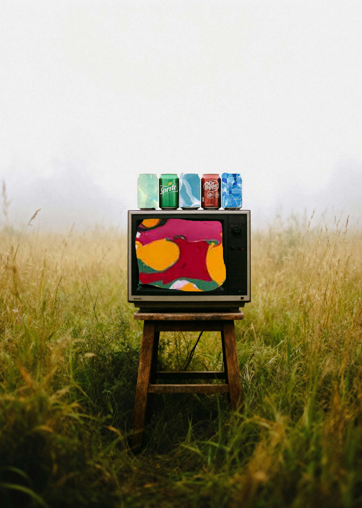

HW 4: Photomontage
Homework 4: Photomontage

For the first photomontage I chose a picture from upsplash. I chose this picture in specific because it shows a lot of juxtaposition, a TV in a grass field is very opposite to me. This picture is something that catches your eye so I wanted to work with that. What I did for this picture was add a marble colorful background to the Television screen. I wanted something colorful because I wanted it to be the first thing that grabbed the viewers attention. For the Soda can part I wanted to edit only some soda cans for two reasons. The first reason was to show the viewer exact what was on top of the Television. The second reason I put a water background was to show the viewer another part of juxtaposition, to have them thinking of how can water be in a soda can.